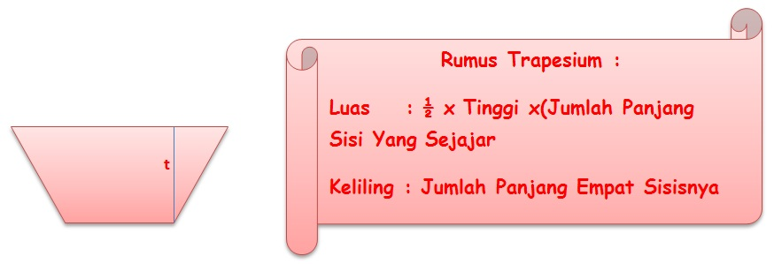
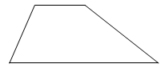

MATERI TRAPESIUM
TRAPESIUM

Bangun trapesium mempunyai sepasang sisi sejajar yang tidak sama panjang. Trapesium dapat dibedakan menjadi 3 macam yaitu:
Trapesium Sembarang
Ciri trapesium sembarang yaitu:
Trapesium Siku-Siku
Ciri trapesium siku-siku yaitu:
Trapesium Sama Kaki
Ciri trapesium sama kaki yaitu: